1. 权正军，李岩，王喜存，杨志旺，提高化学师范学生实践与创新能力的实践探索，大学化学，2019, 34 (2), 26−29。
2. 宋鹏飞，王荣民，基于“化学信息检索”课程培养学生自主学习能力，化学教育，2015，36（22），67-69.
3. 王荣民，何玉凤，宋鹏飞，刘志龙，高效检索与利用化学化工信息之策略，化学教育，2016，37（14），74-77.
4. 王荣民，何玉凤，宋鹏飞，杨志旺，杨彩霞，冯瑞丽，互联网+时代检索化学化工信息与获取原文的便捷方法，大学化学，2017,32(1),69-73
5. 权正军，王喜存，联系生活实例，提高学生对物理化学的学习兴趣，甘肃省化学会第二十八届年会会议论文，2013.7。
6. 权正军，王喜存，教学中运用物理化学知识探讨生活、科研实例的本质——以单组分体系相图的教学为例，第十七届全国高等师范院校化学课程结构与教学改革研讨会，2018.7。
（一）、学术论文
1. T.-L. Wang, X.-J. Liu, C.-D. Huo, X.-C. Wang, and Z.-J. Quan,* Chem. Commun., 2018, 54, 499.
2. P. Song*, L. Kang, H. Wang, R. Guo, and R. Wang. ACS Appl. Mater. Interfaces, 2019, 11, 12408−12414
3. P. Song*, H. Wang, L. Kang, B. Ran, H. Song, and R. Wang. Chem. Commun., 2019, 55, 687-690.
4. X. Zhang, T.-L. Wang, C.-D. Huo, X.-C. Wang, and Z.-J. Quan,* Chem. Commun., 2018, 54, 3114.
5. N. Zhang, Z.-J. Quan,* Z. Zhang, Y.-X. Da and X.-C. Wang,* Chem. Commun. 2016, 52, 14234—14237.
6. N. Zhang, Z.-J. Quan,* Z. Zhang, Y.-X. Da and X.-C. Wang,* Adv. Synth. Catal. 2016, 358, 3179–3183.
7. Z. J. Quan,* and X. C. Wang,* Chem Rec 2016, 16, 435-444.
8. Z.-F. Yan, Z.-J. Quan,* Y.-X. Da, Z. Zhang and X.-C. Wang,* Chem. Commun. 2014, 50, 13555-13558.
9. Z.-J. Quan,* Y. Lv, F.-Q. Jing, X.-D. Jia, C.-D. Huo, and X.-C. Wang, Adv. Synth. Catal. 2014, 356, 325-332.
10. Z.-J. Quan and X.-C. Wang, Org. Chem. Front. 2014, 1, 1128–1131.
11. Z. Yang, X. Xu, X. Liang, C. Lei, Y. Cui, W. Wu, Y. Yang, Z. Zhang, Z. Lei, Applied Catalysis B, Environmental. 2017, 205, 42-54.
12. X. Xu, R. Liu, Y. Cui, X. Liang, C. Lei, S. Meng, Y. Ma, Z. Lei, Z. Yang, Applied Catalysis B, Environmental. 2017, 210, 484-494.
（二）、科研获奖
13. 权正军，C-C偶联反应的合成方法学及其在杂环衍生化中的应用研究，甘肃省自然科学奖二等奖，甘肃省人民政府，2016.，排名第二。
14. 权正军，新型杂环化合物绿色合成方法研究，甘肃省人民政府，甘肃省自然科学奖，三等奖，2009. 排名第二。
15. 权正军，C-C偶联反应的合成方法学及其在杂环衍生化中的应用研究，甘肃省高校科学技术奖一等奖，甘肃省教育厅，2016.排名第二。
制订了多项教育教学改革的方案，注重虚拟仿真实验项目的开发，以及实验教学中心的现代化、信息化建设。提高学生利用专业知识解决应用问题的能力。培养学生的知识创新能力，加强学生自主发现新知、明确知识规律的能力。近年来，中心负责人权正军应邀在第十七届全国高等师范院校化学课程结构与教学改革研讨会、甘肃省大学生化学竞赛、兰州城市学院化学化工学院举办首届中学校长论坛以及其他兄弟院校的实验教学示范中心的座谈会上作大会发言及分会报告，介绍教学改革经验和体会，得到了与会代表的肯定和好评。
(一)、教学获奖
1. 宋鹏飞，基于“化学化工信息检索”培养“双创型”人才，甘肃省教学成果二等奖，2018年4月。排名第二
2. 宋鹏飞，2017年指导本科生获全国讲课比赛优胜奖，获优秀指导教师
3. 宋鹏飞，2016年指导本科生获全国讲课比赛二等奖，获优秀指导教师
4. 宋鹏飞，2016年指导本科生获西北赛区讲课比赛二等奖，获优秀指导教师
5. 宋鹏飞，2016年指导本科生参加第八届东芝杯•中国师范大学理科师范生教学技能创新大赛获得优秀奖，获优秀指导教师
6. 权正军获西北师范大学首届“教学科研”之星荣誉称号，2014
7. 权正军获西北师范大学教学名师荣誉称号，2017年
8. 宋鹏飞，2015年获得校级青年教师讲课比赛三等奖
9. 宋鹏飞，2018年获省级教学成果二等奖，排名第二
10. 宋鹏飞，2017年获教育厅级教学成果奖，排名第二
11. 宋鹏飞，2016年获校级教学成果奖，排名第二
12. 宋鹏飞，2009年、2014年两次获学校优秀实习指导教师
13. 杨志旺，2017年11月，甘肃省优秀学位论文(硕士)指导教师，甘肃省学位委员会/甘肃省教育厅；
14. 杨志旺，2016年9月，西北师范大学教学成果奖，西北师范大学（排名第三）
15. 杨志旺，2017年4月，首届甘肃省大学生物理实验竞赛优秀指导教师，甘肃省教育厅
16. 杨志旺，2014年12月，甘肃省第二届大学生化学竞赛优秀指导教师，甘肃省教育厅
17. 杨志旺，2014年4月，西北师范大学“双星计划”，西北师范大学
18. 杨志旺，2014年6月，西北师范大学第二届青年教师教学技能大赛三等奖，西北师范大学
19. 吕晓燕，获得甘肃省第九届、第八届基础教育科研优秀成果二等奖
20. 吕晓燕，兰州市第九届、第八届基础教育科研优秀成果一等奖
21. 王顺，获全国化学竞赛（甘肃赛区）优秀指导教师7次
22. 丁小斌. 西北师范大学第57届教育实习优秀指导教师，西北师范大学
23. 王顺，2012年评为甘肃省教育科学专家
24. 王顺，2010评为中国化学会化学教育专业委员会优秀教师。
（二）、出版教材
25. 王荣民，宋鹏飞，等，化学化工信息检索及网络资源检索与利用（第二版、第三版、第四版），参与编写教材3本，化学工业出版社，2007、2012、2016
26. 李天安，柴雅琴，杨志旺，等，《无机物制备》，科学出版社，2014年1月
27. 李天安，马学兵，杨志旺，等，《有机物制备》，科学出版社，2014年1月
28. 熊华军. 西部高校研究生培养机制改革研究，江西高校出版社，2012
29. 熊华军. 意义生成与大学教学，光明日报出版社，2013
30. 熊华军. 高校青年教师教学能力发展研究，科学出版社，2016
31. 丁小斌. 类别学习中的知识效应研究——理论与实验，社会科学出版社，2013
32. 杨涵雄，吕晓燕. 中学化学教学设计与案例分析，甘肃教育出版社，2018.
（三）、教学项目
33. 国家社会科学基金十三五规划2017年度教育学青年课题《西北农村中学教师教学研究能力发展困境与对策研究》（课题编号CAA170243），项目主持人：方洁，2017-2020。
34. 《西北民族地区高校青年教师教学能力发展研究》，全国教育科学“十二五”规划2012年国家青年课题（项目批准号CIA120150），项目主持人：熊华军，2012-2015。
35. 全国教育科学“十二五”规划2011年度国家青年项目“类别学习中的知识效应研究”（CBA110103），项目主持人：丁小斌，2011-2014.
36. 权正军，非化学专业化学系列课程改革的研究与实践（2011032B），校级，主持，2012.01-2014.12
37. 权正军，研究生有机合成化学教学实践与改革探索，校级，主持，2016.01-2017.12。
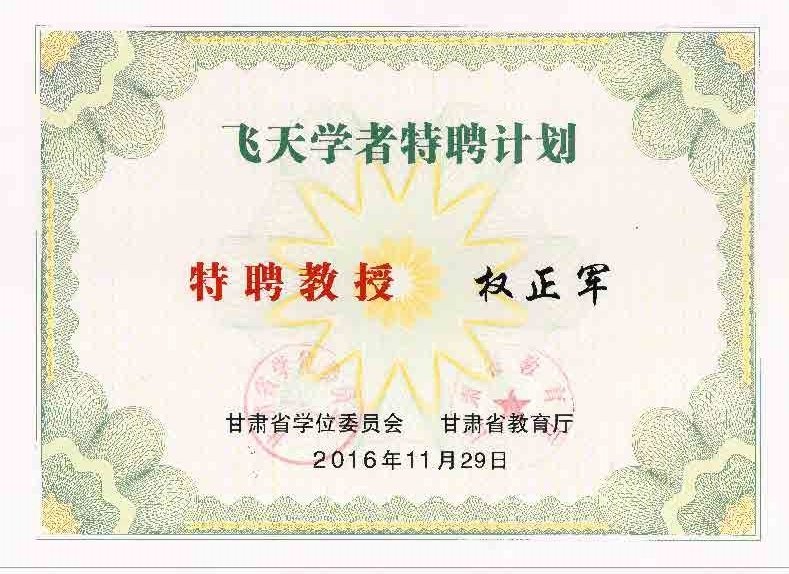 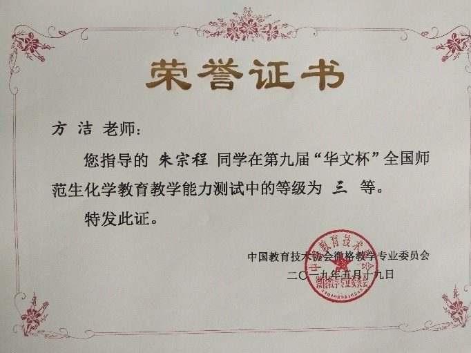 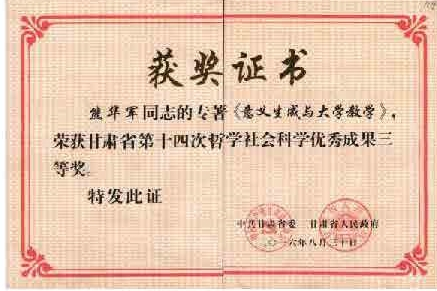 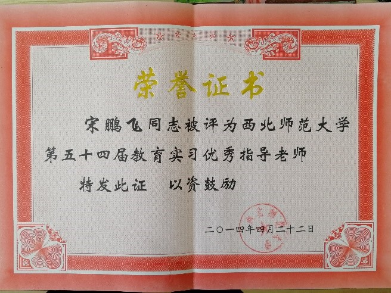 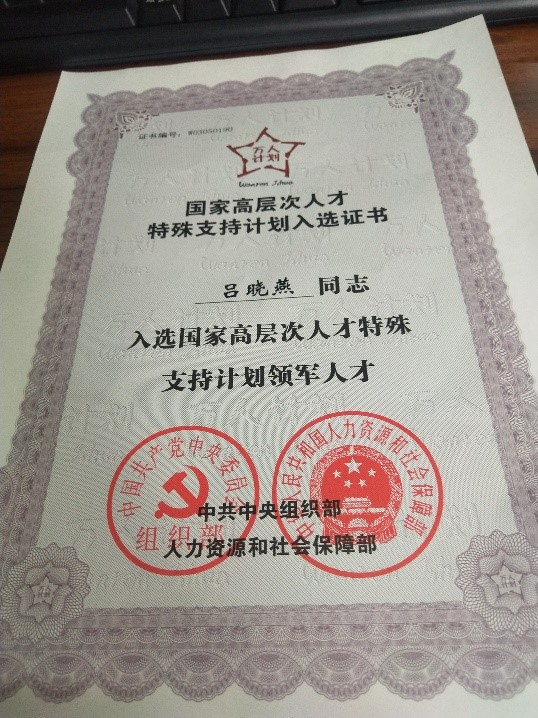 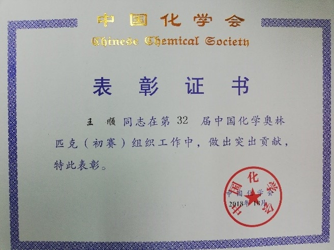 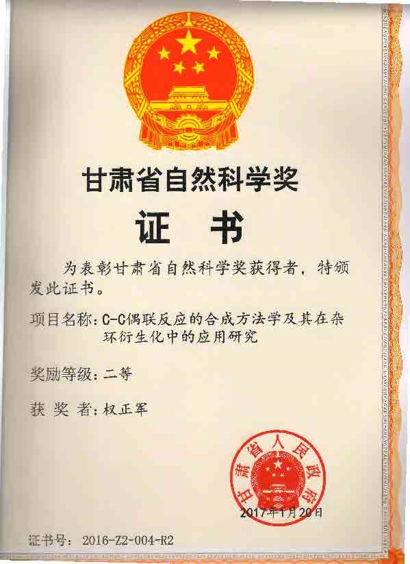 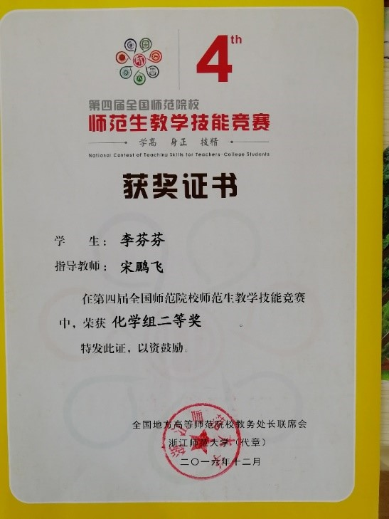 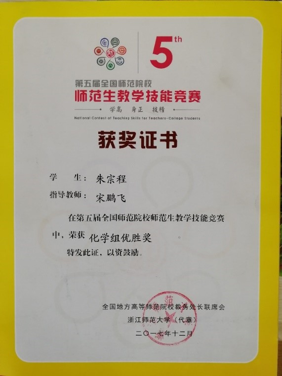 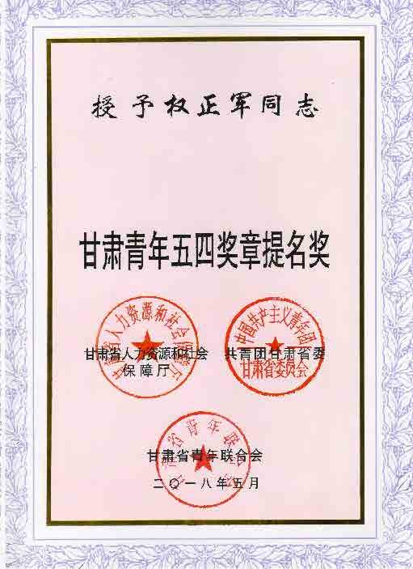 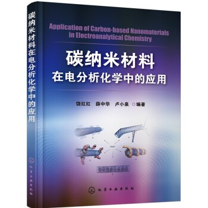 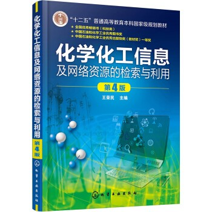 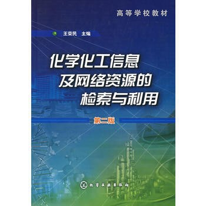